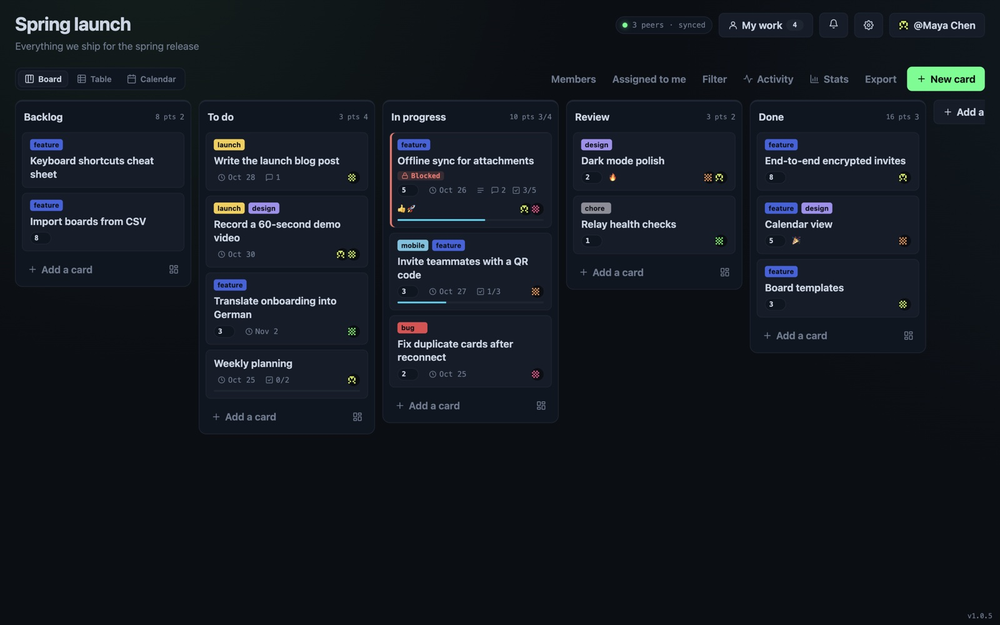
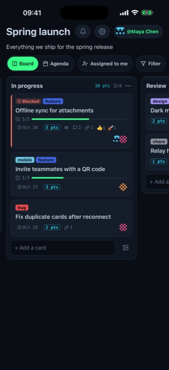
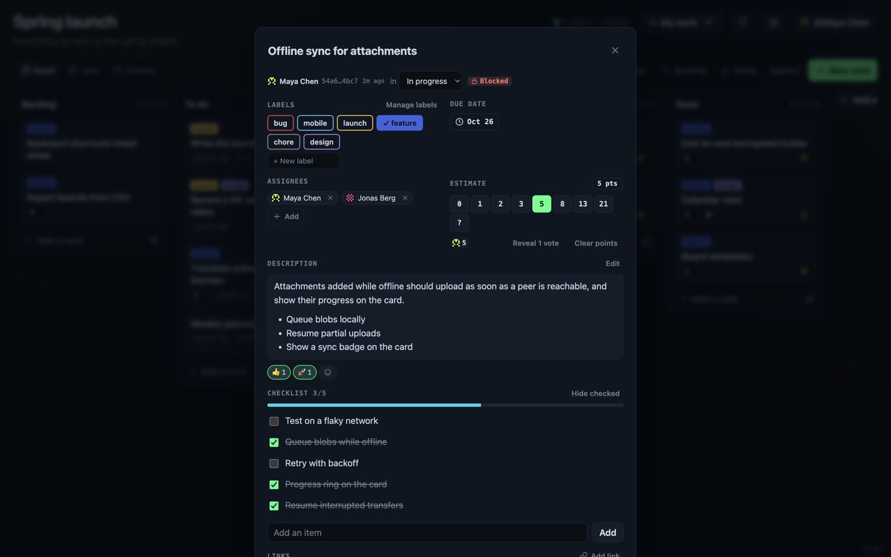
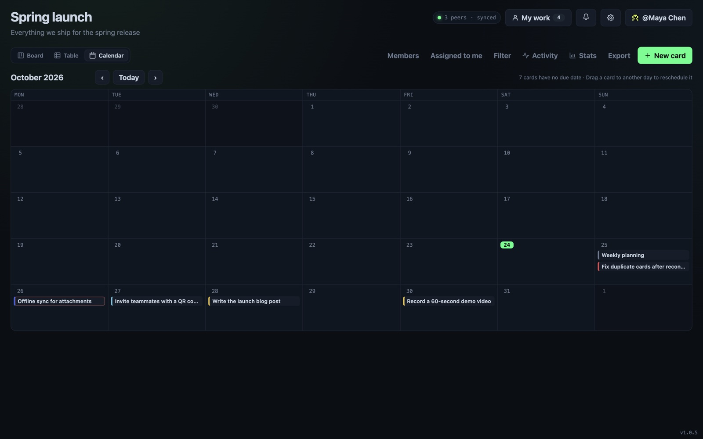
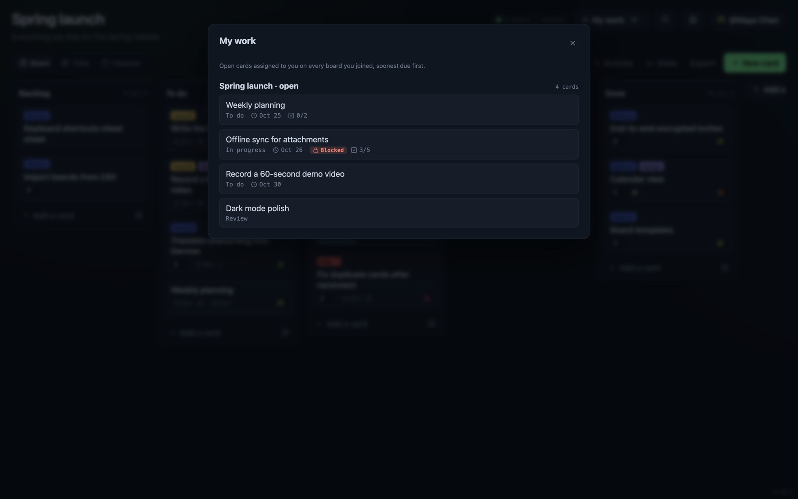
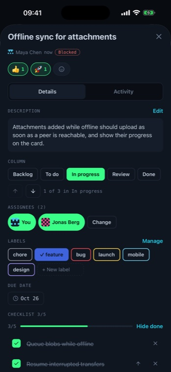
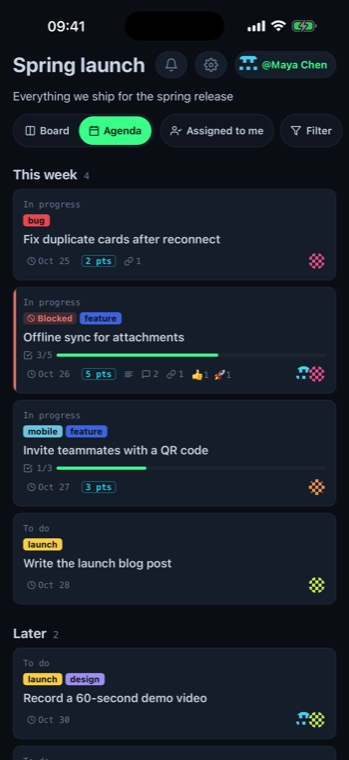
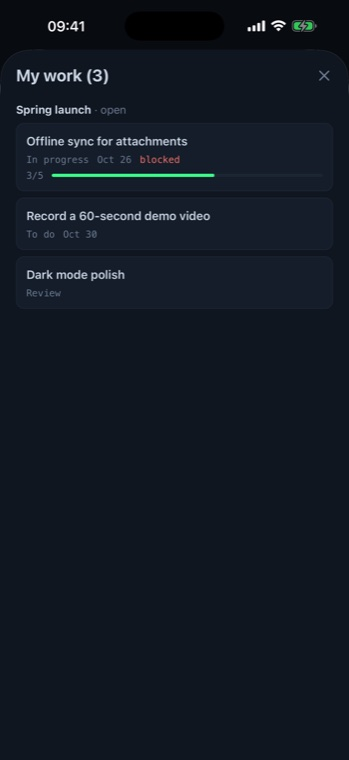

No backend to run or pay for
Devices sync with each other, so costs don't grow with your team. The only optional infrastructure is one always-on peer.
A Kanban board your team shares directly between devices: no sign‑up, no cloud database, no subscription.








Devices sync with each other, so costs don't grow with your team. The only optional infrastructure is one always-on peer.
Boards live on members' devices, encrypted with the invite secret. No vendor holds a copy, and a peer that stores the data can't read it.
Keep working without a connection. Changes merge the next time two members are online together, and every device ends up with the same board.
Also Linked and blocked cards · WIP limits · Rules and recurring cards · Labels, due dates and filters · Notifications · Owner and admin roles · Full export
No account: your identity is a key on your device, backed up as a recovery phrase. Write it down: it's the only way back in.
Send the invite link to your team. Whoever holds it can find the board and read it; nobody else can.
Members find each other over a distributed network and connect with encrypted, hole-punched links. No relay server reads the traffic.
The trade-off: with no server holding a copy, two members have to be
online at the same time to sync. To cover the gaps, keep one peer always on, such as
opencollab watch on a small server.
macOS, Windows and Linux. Installs from peers and keeps itself updated.
npx pear install pear://nzi3suuxyzwj6oosortonj5pxd9s7ckgd8cr87szddaamxi77kny
Read and edit boards from a terminal, or run an always-on peer for your team.
npx pear install --to ~/.local/share
pear://q1huw5ozxk8j36pcb8sicfr4dtgf9154r5aj3yzqa14ngxxq1kmy
The full board in your pocket, with biometric unlock and notifications.
Download the APKAndroid 10 or newer.
The same app, with biometric unlock and notifications.
Build from sourceAfter that it updates itself over Pear.
Installing needs at least one peer online that has the release, and
Node.js for npx pear.
On every member's device. Each keeps a full copy as signed, append-only logs, one per member, merged into one board. Opening a board reads your local copy, so it works offline; syncing only exchanges the entries the other side is missing.
Through a distributed hash table that every running Holepunch app helps run. Each board has a topic derived from its key; members announce themselves under it and look each other up. The only fixed addresses are three bootstrap nodes used once to join the network, and DHT nodes only ever see a hash of the board's key.
With UDP hole punching: both devices learn their public address from the DHT and send packets to each other at the same moment, so both routers open a path. Every connection is end-to-end encrypted. A few strict networks block this; a peer with a public IP, like a blind peer on a VPS, bridges the gap.
You keep working. Changes go into your own log and sync the next time you and another member are online together. If your team is rarely online at the same time, run a blind peer: it keeps an encrypted copy of your boards available around the clock, without being able to read them.
Only people holding the invite link. The link carries the board secret: cards, comments, the board name and attachments are encrypted with keys derived from it. Every change is signed by its author, so nobody can forge or rewrite someone else's edits.
For each field the newest change wins, with ties broken the same way everywhere. Comments, votes and images only add, so nothing is lost. Every device applies the same rules to the same signed changes and ends up with the same board.
There is no account to recover. Your identity is a key backed up as a recovery phrase; enter it on a new device and you're back as the same member. Without the phrase, nobody can restore it.
Close to it: DHT bootstrap nodes to join the network, optionally a blind peer or an always-on CLI peer for availability and bots, and the App Store for the iPhone binary. None of them sees your board's content.
Boards are invite-only and there is no public directory of them. Owners and admins can remove a member, and anyone can block or report one in the app. Reports reach the maintainer privately. Nobody, including us, can read your boards, but we can stop our always-on peers from serving a board that breaks the terms of use and cooperate with lawful requests.
No. Each edit is a signed operation in its member's own log. Nobody can rewrite someone else's work, and moderators can shut out a removed member.
From other peers. The desktop app and the CLI update themselves from peers that have the release, and the iPhone app gets its JavaScript updates the same way.
More detail in the full FAQ.